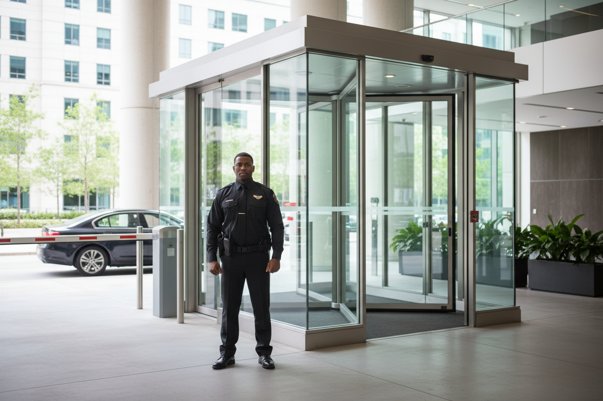

Prezență profesionistă
Agenți de securitate
Personal pregătit pentru protejarea obiectivelor, persoanelor și bunurilor.
Prezență și prevenție
Agenți de securitate integrați într-un dispozitiv adaptat obiectivului, programului și fluxurilor de persoane sau bunuri.
Despre serviciu
Paza umană înseamnă mai mult decât prezență. Organizăm posturile, rondurile, controlul accesului și raportarea incidentelor pornind de la nevoile reale ale locației.
Prezență profesionistă
Personal pregătit pentru protejarea obiectivelor, persoanelor și bunurilor.
Protecție adaptată
Posturi și proceduri organizate pentru companii, instituții și proprietăți.
Control organizat
Gestionarea accesului, fluxurilor de participanți și situațiilor neprevăzute.
Evaluare și strategie
Analiză de risc, proceduri operaționale și soluții adaptate fiecărui obiectiv.
Echipamente și componente
Configurația finală se stabilește după evaluarea obiectivului. Lista de mai jos prezintă componente care pot face parte din soluție, în funcție de necesități.

Mențin legătura cu responsabilii și echipele de suport.
Pot confirma prezența și traseele stabilite.
Ajută la identificarea personalului în zonele de lucru.
Susține verificările pe timp de noapte.
Organizează evidența vizitatorilor și a vehiculelor.
Standardizează consemnul, verificările și raportarea.
Cum lucrăm
Înțelegem obiectivul, fluxurile și punctele vulnerabile.
Stabilim configurația, echipamentele și procedurile potrivite.
Instalăm sau organizăm serviciul și verificăm funcționarea.
Asigurăm mentenanța și ajustările convenite.